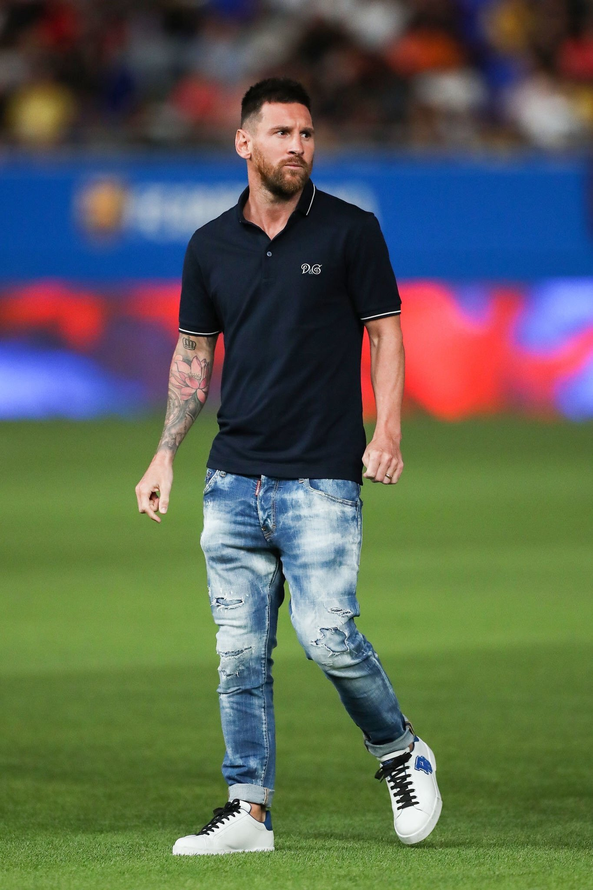

Legacy of Soccer's Finest: Messi, Ronaldo, Mbappe & Haaland
Legends Redefining Soccer
Soccer’s evolution has been marked by extraordinary talents that inspire fans, drive young players, and capture global attention. Lionel Messi, Cristiano Ronaldo, Kylian Mbappe, and Erling Haaland embody excellence, perseverance, and passion in distinct ways. This page explores their legacies — the skills, records, and moments that will echo through soccer history and beyond.
Lionel Messi: The Visionary Playmaker
Lionel Messi is more than just a soccer player; he’s a symbol of dedication, humility, and artistry on the field. Known for his mesmerizing dribbling and unbreakable vision, Messi’s influence reaches beyond the stadium.
Achievements:
With 7 Ballon d’Or awards, Messi is the most decorated player in soccer history. His years at Barcelona shaped the club’s golden era, where he led them to multiple Champions League titles. His 2022 World Cup win with Argentina was a crowning moment, uniting fans worldwide.Impact on Play Style:
Messi redefined the role of a playmaker, blending midfield vision with a striker’s instinct. Young players today emulate his low center of gravity and his ability to dictate a game’s pace with precision.Beyond the Game:
Messi’s humble personality has also earned him global respect. Through the Leo Messi Foundation, he funds initiatives in healthcare, education, and sports, focusing on helping disadvantaged children achieve their dreams.
Cristiano Ronaldo: The Athletic Icon
Cristiano Ronaldo’s relentless pursuit of greatness has established him as a standard of excellence in modern soccer. His athleticism, commitment, and mentality make him a role model for players across all sports.
Achievements:
Ronaldo’s records are unparalleled, with 5 Ballon d’Or awards and the title of the highest goal-scorer in both international soccer and the Champions League. He has won league titles across England, Spain, and Italy, showcasing his adaptability and relentless drive.Impact on Training and Fitness:
Ronaldo’s physique and athleticism have inspired a generation to prioritize strength, conditioning, and tactical preparation. His physical prowess and iconic celebrations have brought a new, intense dimension to the sport, proving that hard work can enhance talent.Off-Field Influence:
Ronaldo’s global brand, CR7, has made waves in fashion, lifestyle, and social media. With the largest following of any athlete online, he leverages his influence for philanthropy, supporting causes like disaster relief and hospitals, and advocating for children’s welfare.
Kylian Mbappe: The Future of Soccer
Kylian Mbappe represents the next generation of soccer, seamlessly blending speed, skill, and composure. He has already made history, becoming a global icon while still in his early 20s.
Achievements:
Mbappe won the 2018 World Cup with France at just 19, becoming only the second teenager after Pelé to score in a World Cup final. He has led PSG to multiple Ligue 1 titles and is consistently among the top scorers in Europe.Style of Play:
Known for his blistering speed and dynamic versatility, Mbappe has set a new standard for wingers and forwards. His ability to shift between creator and finisher makes him a unique asset, inspiring young athletes to expand their roles on the field.Social Impact:
Mbappe actively supports youth empowerment through his "Inspired by KM" initiative, which provides resources for children to succeed in sports and education. His relatable personality and grounded attitude make him a positive influence, especially among younger fans.
Erling Haaland: The Power Forward
Erling Haaland has brought a new level of physicality and efficiency to the game, setting goal-scoring records with unprecedented speed. Known for his towering presence and instinctive finishes, Haaland is redefining the forward position.
Achievements:
Haaland has broken multiple records in the Bundesliga and Premier League, becoming the fastest player to reach various goal milestones. His impact at Manchester City has solidified his reputation as a generational talent in the making.Playing Style:
With his strength, positioning, and lethal finishing ability, Haaland represents a new type of striker. His intense focus and goal-scoring efficiency have inspired aspiring players to emulate his direct, powerful style.Growing Influence:
Haaland’s popularity has extended globally, particularly among younger fans who admire his determination. His grounded personality and strong Norwegian roots also highlight his commitment to supporting local communities, reinforcing his place as a role model.
Messi vs. Ronaldo: A Rivalry for the Ages
The rivalry between Messi and Ronaldo has shaped an era, pushing both players to new heights and captivating fans worldwide. Together, they have redefined what’s possible in soccer, challenging records and inspiring conversations about greatness. Their contrasting styles — Messi’s playmaking finesse versus Ronaldo’s athletic power — have given fans the gift of seeing two distinct approaches to excellence, a rivalry that will be remembered for generations.
Mbappe and Haaland: The Future Rivalry
Mbappe and Haaland have taken up the mantle as soccer’s next great rivals. Both players have shattered records early in their careers and continually compete for the top spot among young talents. Their legacies are already growing, promising a rivalry that will define the next decade of soccer and potentially surpass the achievements of their predecessors.